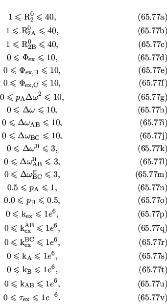
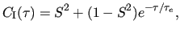
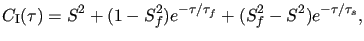
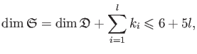
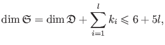

Next: The reduced CR72 2-site Up: The analytic CPMG models Previous: The LM63 3-site fast Contents Index
This is the model for 2-site exchange on most times scales (with the constraint that pA > pB), named after Carver and Richards (1972). It is selected by setting the model to `CR72 full'. The equation is
| R2eff =  |
(11.14) |
where
| D |
= 1 +  , , |
(11.15) |
= 2 |
(11.16) | |
| = |
(11.17) | |
| = 2 |
(11.18) |
Note that these equations use the numerically simplified form derived in the appendix of Davis et al. (1994).
This model is not accurate when the motional process is very slow.
In that case, the `TSMFK01' model in Section 11.3.6 on page ![[*]](crossref.png) should be used instead.
should be used instead.
The reference for this equation is:
More information about the CR72 full model is available from: